Бердск
Преображенский кафедральный собор
Бердск, ул. Горького, д. 44
О храме и богослуженияхБердск и Новосибирский район
В каталоге 14 приходов; на карте отмечены 10 с подтверждённым местоположением.
Пока без отметки на карте: Новообразованный приход во имя преподобного Сергия Радонежского; Приход во имя святителя Николая Чудотворца (с. Гусиный Брод); Строящийся храм в честь иконы Пресвятой Богородицы «Всех скорбящих Радость»; Новообразованный приход в честь иконы Пресвятой Богородицы «Достойно есть».
Бердск, ул. Горького, д. 44
О храме и богослужениях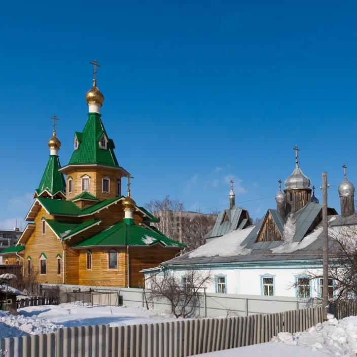
Бердск, ул. Кутузова, 17
О храме и богослужениях
Бердск, ул. Боровая, 111
О храме и богослужениях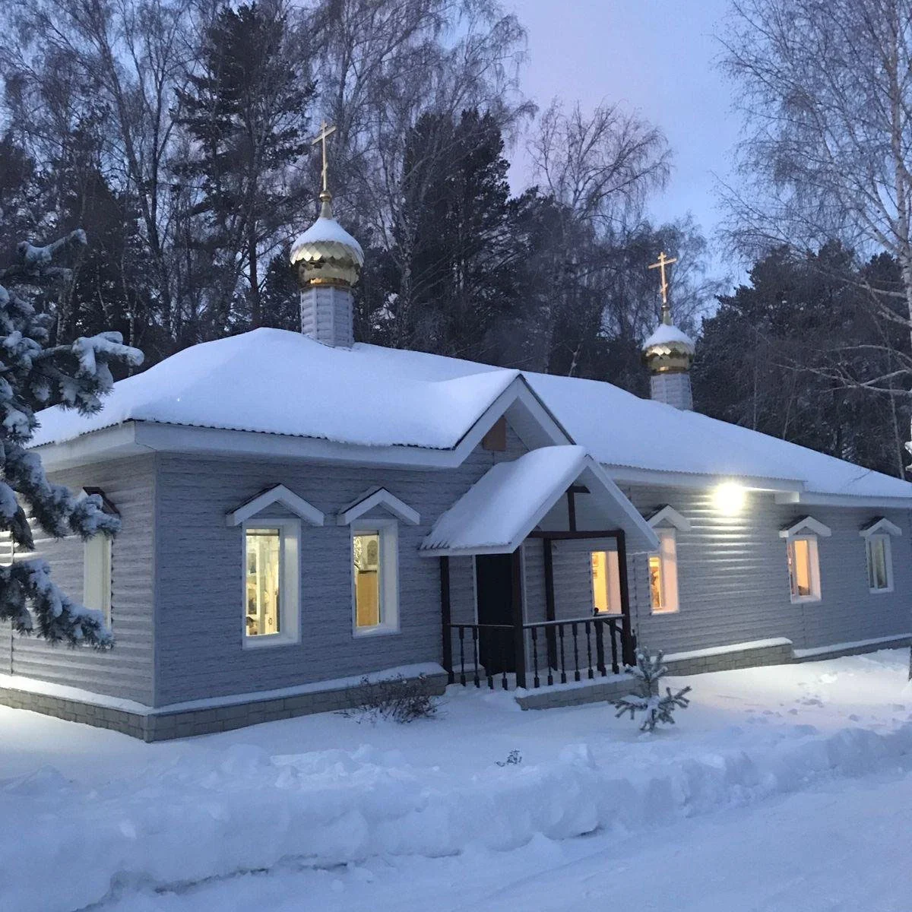
Бердск, ул. Тимирязева, 7, корпус 1
О храме и богослужениях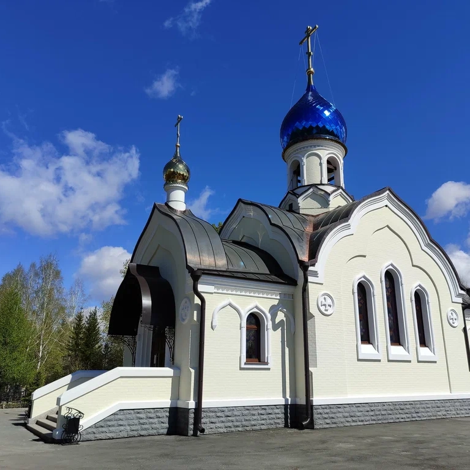
г. Бердск, ул. Полевая, 138
О храме и богослужениях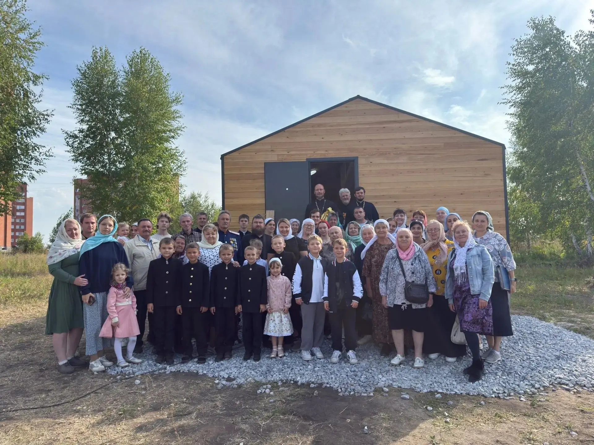
Бердск, микрорайон Белокаменный — временный храм по сообщению от 20 сентября 2026 года; улица и номер не опубликованы.
О храме и богослужениях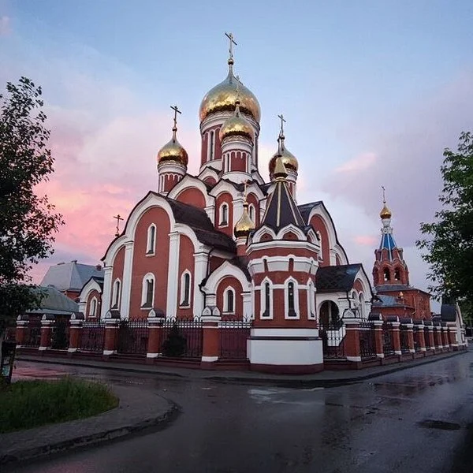
Новосибирский район, Станционный сельсовет, станция Мочище, бульвар Мечты
О храме и богослужениях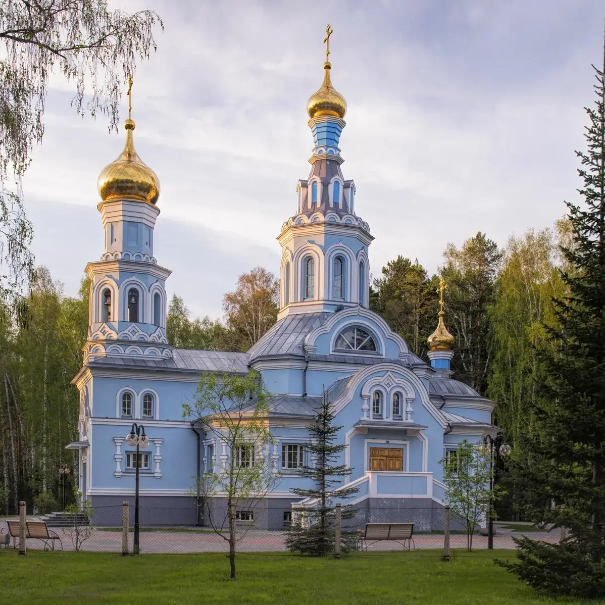
Новосибирская область, рабочий посёлок Кольцово, 17А
О храме и богослужениях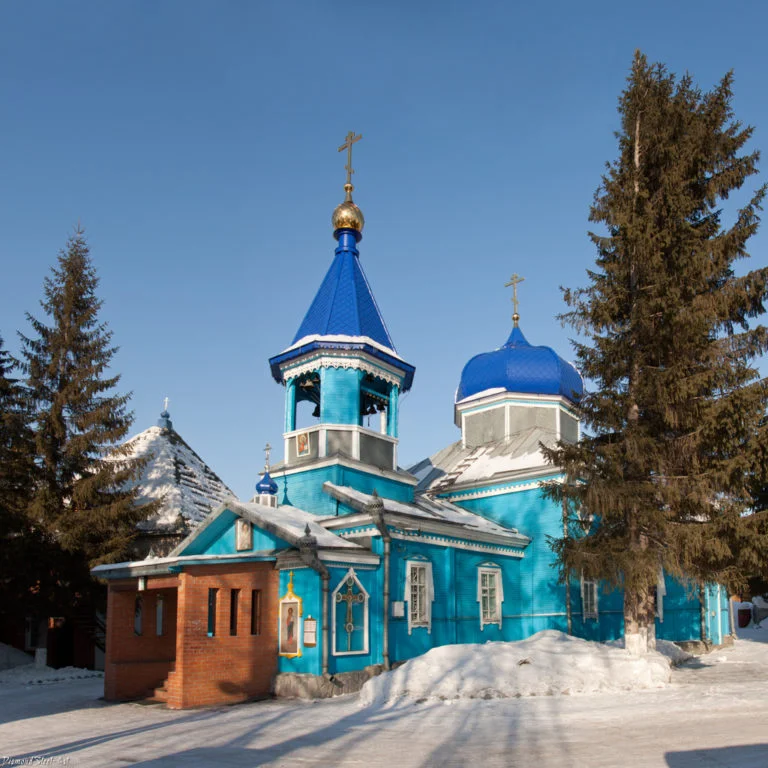
с. Новолуговое, ул. Первомайская, 3
О храме и богослужениях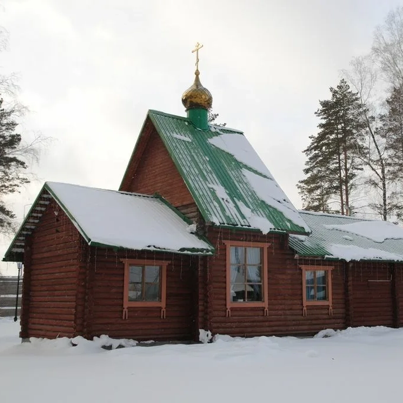
Новосибирский район, с. Раздольное, ул. Ленина, 3
О храме и богослужениях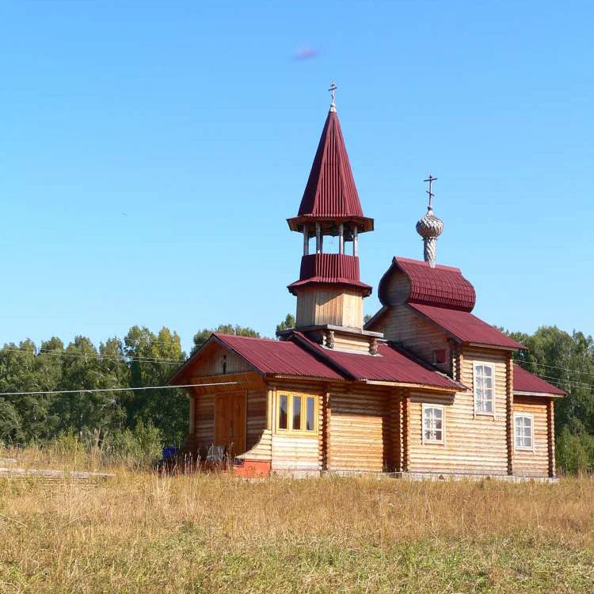
с.Гусиный Брод
О храме и богослужениях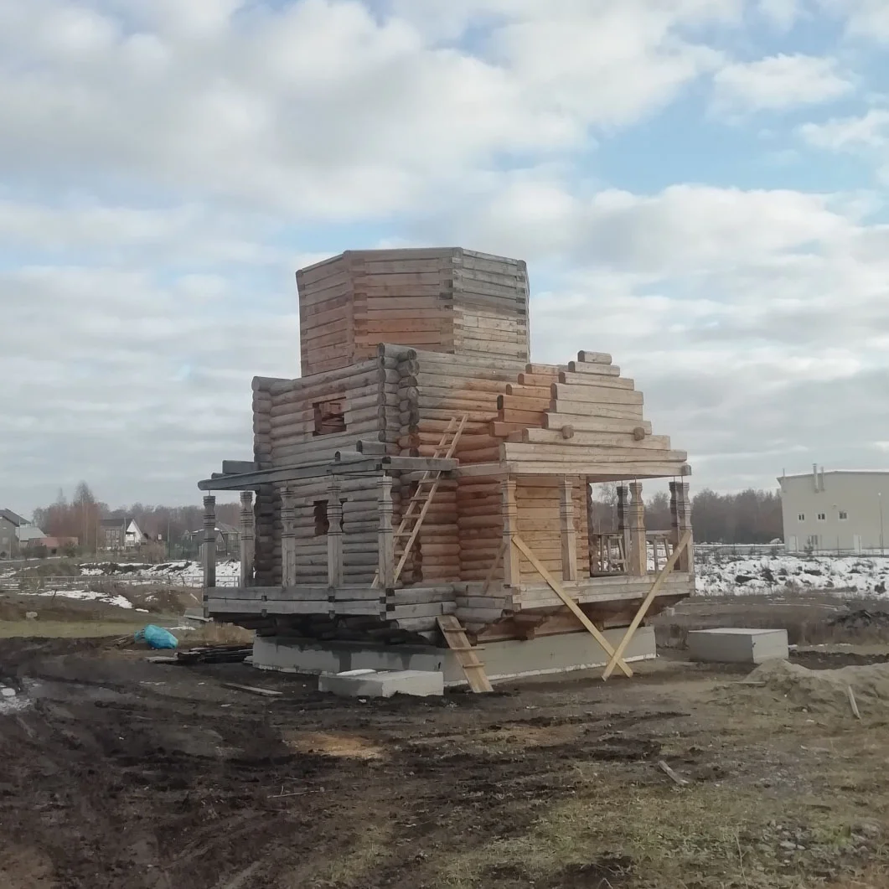
Новосибирский район, посёлок Ложок, переулок Полянка, 2
О храме и богослужениях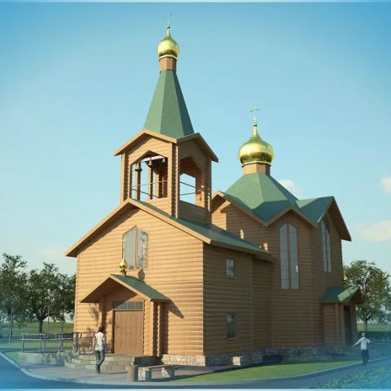
с. Плотниково, ул. Береговая 1/1
О храме и богослужениях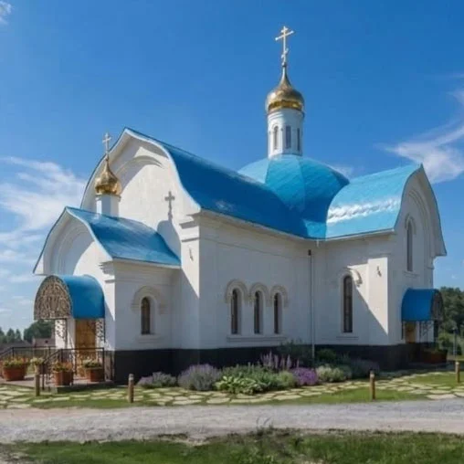
пос. Садовый, Новосибирский район
О храме и богослужениях